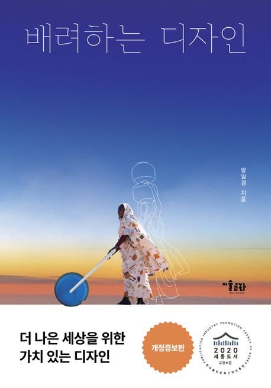
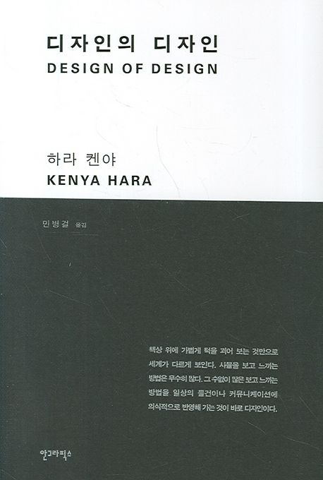
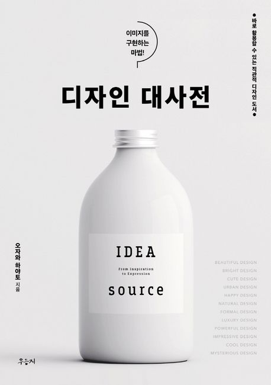
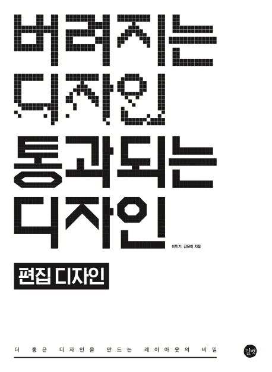
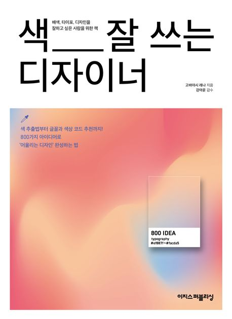
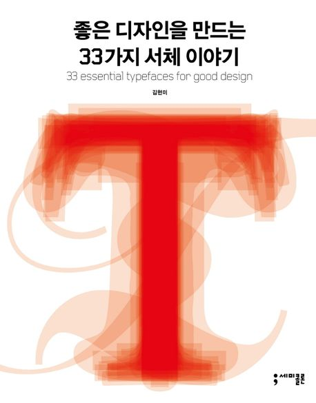

 |  |
|---|---|
배려하는 디자인, 방일경'배려'를 '지속가능성'과 '윤리적 실천'이라는 관점에서 접근하며, 사용자를 편리하게 만드는 것을 넘어, 디자인이 환경과 사회 전반에 긍정적인 영향을 미쳐야 한다는 '태도'가 필요하다고 말합니다. |
디자인의 디자인, 하라켄야작가가 아트 디렉터를 맡은 '무인양품'의 철학을 중심으로, 디자인이란 무엇이며 디자이너는 어떤 역할을 해야 하는지에 대한 그의 깊은 사유를 담아낸 책입니다. |
 |  |
디자인 대사전, 오자와 하야토각 영역에서 꼭 알아야 할 그리드 시스템, 황금비, 색채 이론 등을 사전처럼 명확하게 정의하고 시각 자료와 함께 설명해 줍니다. 단순히 용어만 나열하는 것이 아닌 아이디어, 구체적인 디자인의 발전, 구현까지의 프로세스를 알려줍니다. |
버려지는 디자인 통과되는 디자인: 편집 디자인, 이민기, 강유미편집, 그래픽 디자인 작업을 진행해 온 작가가 디자인 시 꼭 알아야 할 원칙과 이유를 설명하는 책으로, 100개의 버려진 디자인 시안과 통과된 디자인을 통해 그 차이에 대해 설명하고 실무적인 팁을 알고, 어떤 점을 수정해야 좋은 디자인이 되는지 파악하도록 합니다. |
 |  |
색 잘 쓰는 디자이너, 고바야시 레나'이런 느낌을 내고 싶은데, 어떤 색과 폰트를 써서 어떻게 배치해야 할지' 막막한 사람들이, 완성된 레퍼런스를 통해 응용할 수 있도록 돕는 실용적인 '디자인 아이디어 자료집'입니다. |
좋은 디자인을 만드는 33가지 서체 이야기, 김현미디자이너가 디자인을 할 때 '무기'처럼 활용할 수 있는 필수 영문 서체 33가지를 선별하여, 각 서체의 '이야기'를 들려주는 실용적인 서체 가이드북입니다. |